公共埋点说明
要先导入埋点的js文件才能使用埋点功能, 登录DM Hub,点击互动,在下拉列表中选择公司网站 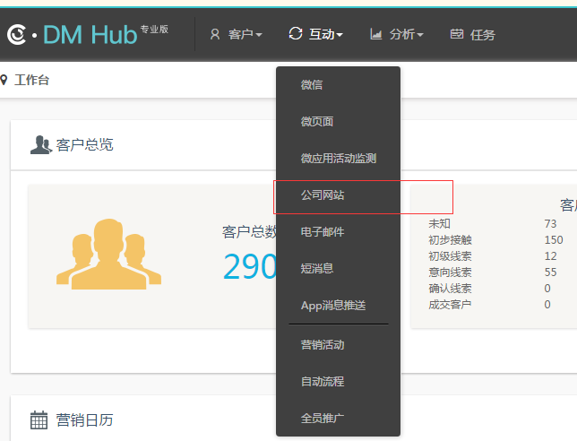
进入如下页面: 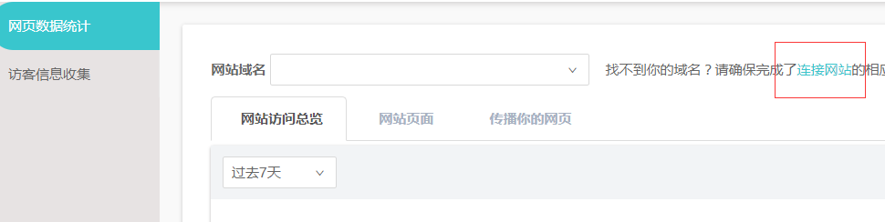
点击连接网站,在打开的页面中复制如下代码 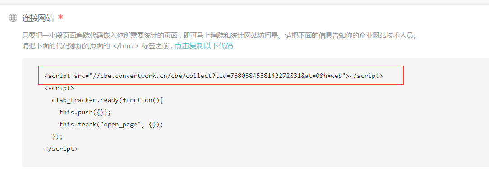
这段代码就是埋点的js文件,在每个页面中都要导入该js文件,这样就可以使用埋点功能来进行追踪和统计了
事件推送 js埋点
对于打开链接触发的事件,只需要在被打开的页面中放入如下代码:
<script src="//cbe.convertlab.com/cbe/collect?tid=7680584538142272831&at=0&h=web">
</script>
<script>
clab_tracker.ready(function(){
this.push({});
this.track(event,targetName,targetId);
});
</script>
还可以直接在链接上 添加一个属性data-cl-event,值为要触发的事件,如:
<a data-cl-event = "open_page"></a>
如果事件的触发不是有链接的点击触发的，也可以使用track方法来提交事件， track方法的定义：
track:function(event,targetName,targetId,properties,callback)
properties参数为可选，如果有properties参数会替换page的properties
callback 参数为可选，如果有callback在完成track发送动作后调用此方法
对于点击按钮事件,需要在该按钮触发的onclick方法中添加如下代码:
if(_cl_tracker){
_cl_tracker.track(event,targetName,targetId);
}
| Track方法的参数意义 | |
|---|---|
| Event | 事件类型 |
| targetName | 比如如果事件为关注公众号，targetName为公众号的名字 |
| targetId | 比如如果事件为关注公众号，targetId为公众号在DM Hub系统中的id |
获取嵌入式form表单
1. 登录 DM Hub
2. 点击互动按钮,出现下拉框选项,选择公司网站
选择公司网站后,进入如下页面 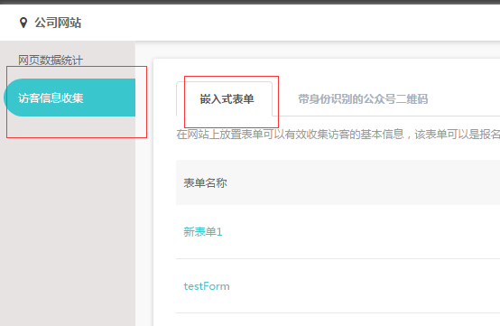
点击访客信息收集,点击后进入form表单页面,点击右侧的 新建表单: 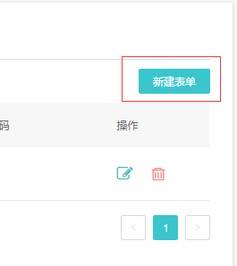
这样我们就进入了创建form表单页面,表单名可自定义,页面布局如下: 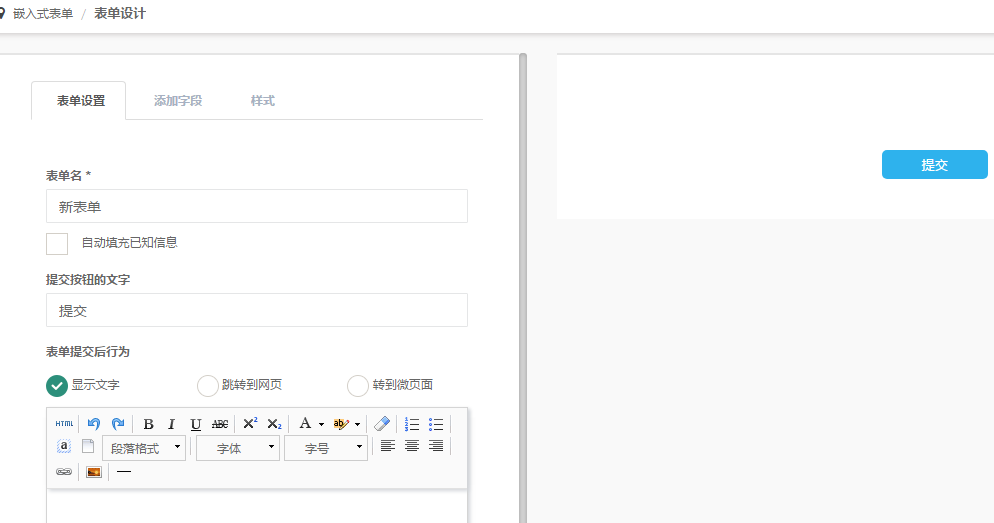
左侧配置表单信息,配置form表单的属性,请点击按钮 添加字段 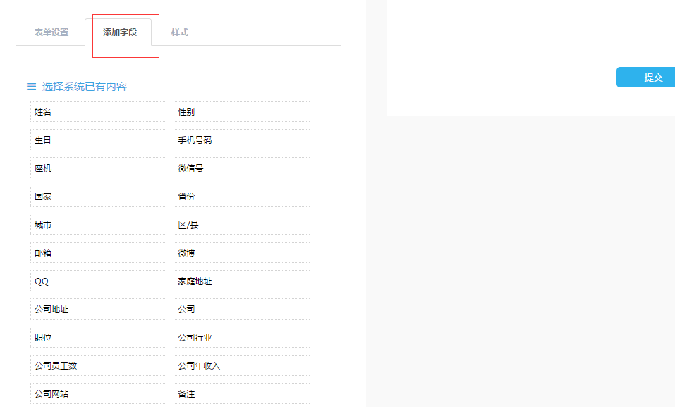
如果需要自定义属性,请点击按钮 新建客户属性 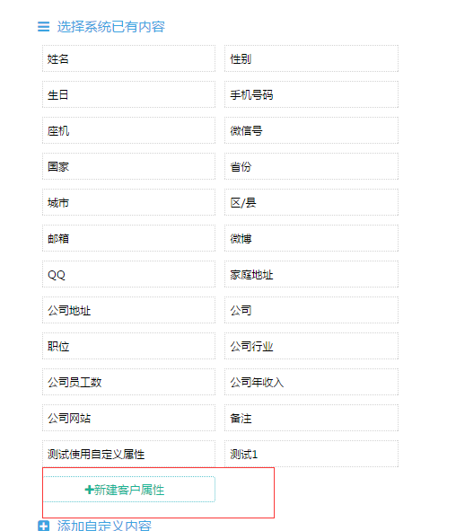
点击后,在输入框中输入自定义的属性名称,点击保存后,添加自定义属性成功 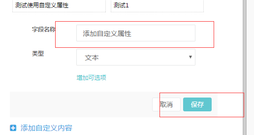
3. 创建form表单,点击需要的属性,右边会生成对应的表单
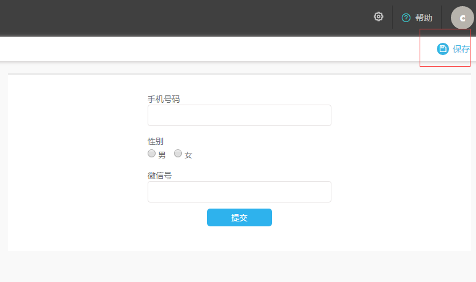
点击右上角的 保存 按钮,保存form表单
4. 保存成功后,跳转到form列表,列出你创建的所有的form表单,可以通过表单名称查看指定的form表单
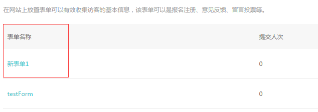
5. 获取form表单代码,点击按钮 表单代码,弹出框中显示的就是form表单的代码
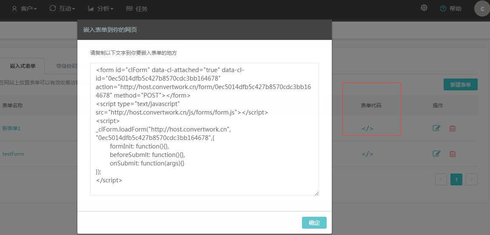
把这段代码放入需要嵌入表单的地方,就可以生成对应的form表单
用户自由表单提交数据
如何使用自己的form表单样式 我们已经创建好了form表单,但是原生form表单的样式是无法修改的,如果用户想要使用自己的表单样式, 操作流程如下:
1. 查询属性的id
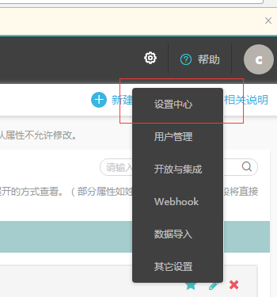
进入设置中心后,点击按钮”客户属性” 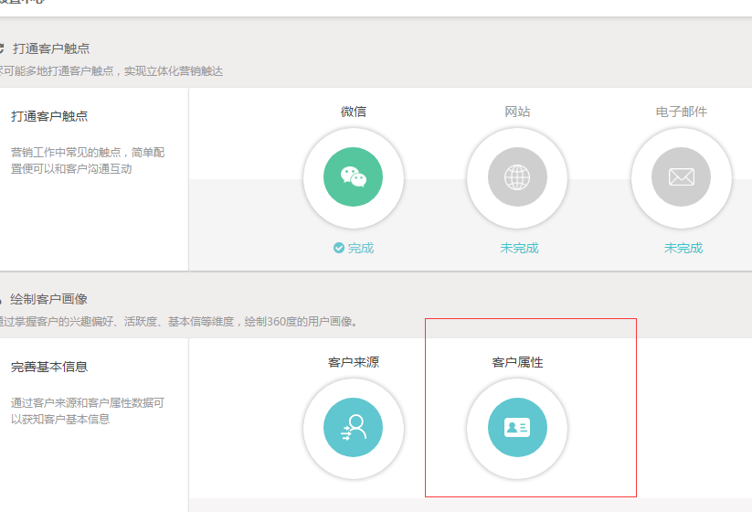
进入客户属性页面,里面有客户属性的id,包括自定义的属性 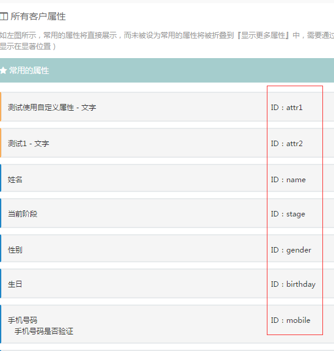
2. 获取action
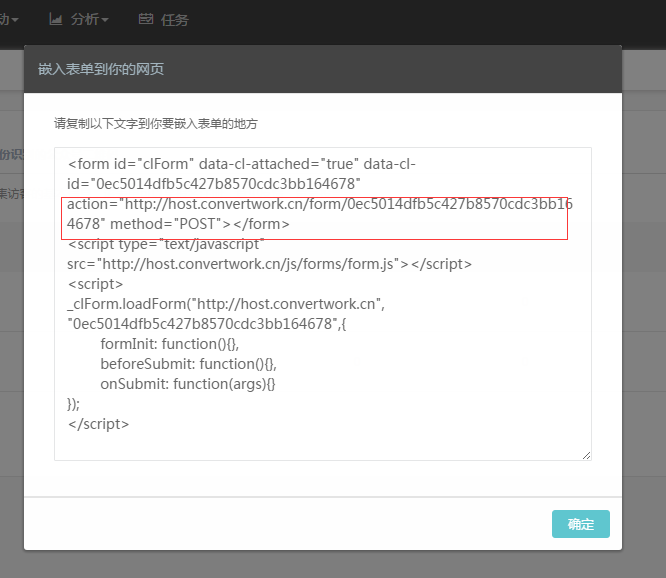
将用户的form表单中的name和action替换为DM hub提供的name和action,就能使用自己的form表单样式,将数据提交到DM hub中
3. 怎么查看uuid
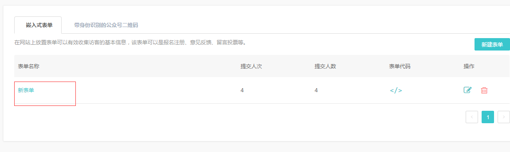
这是我们创建的表单,点击表单名称,跳转到表单数据页面,注意表单的url 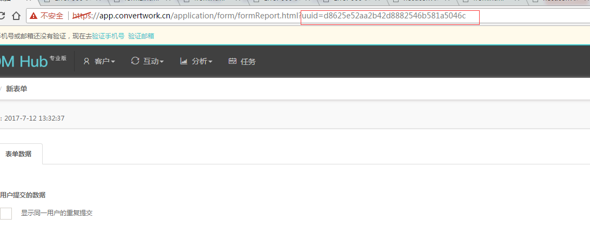
最后一个参数就是uuid
在打开页面时，发GET请求获取cltoken，该token在提交表单时使用，并且只能使用一次，如果要再次提交需重新获取cltoken, 如果要重复使用token,请参考如下demo: 红色框注明的是要添加到外部form表单中的 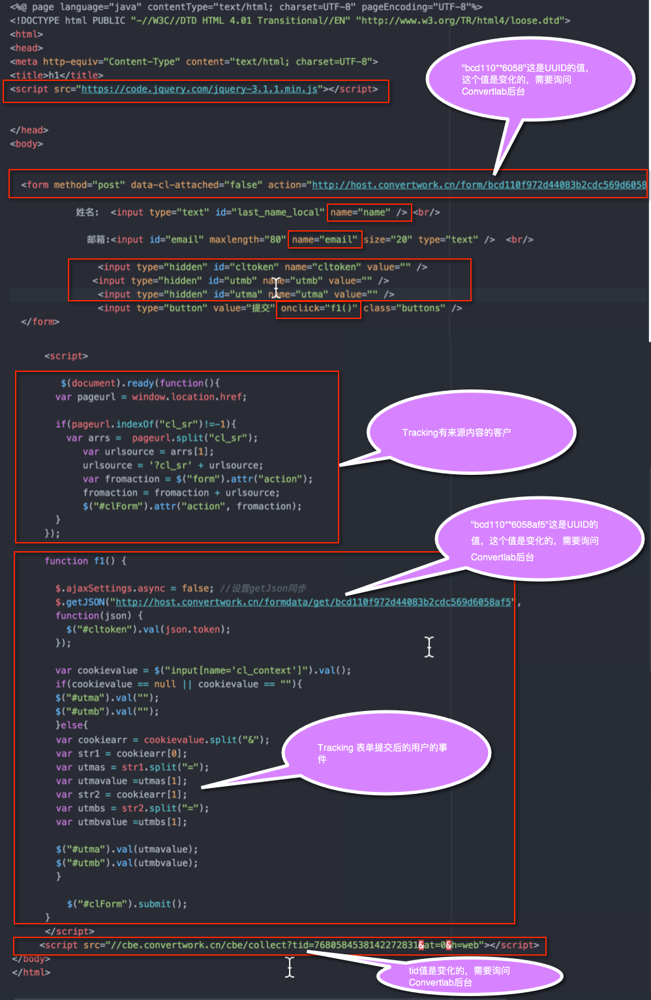
GET: http://host.convertlab.com/formdata/get/{uuid}
返回的结果格式如下:
{
"uuid": "d8625e52aa2b42d8882546b581a5046c",
"title": "新表单",
"content": "{\"fields\":[{\"name\":\"name\",\"type\":\"Text\",\"label\":\"姓名\",\"description\":\"\",\"required\":false,\"placeholder\":\"姓名\"},{\"name\":\"wechat\",\"type\":\"Text\",\"label\":\"微信号\",\"description\":\"\",\"required\":false,\"placeholder\":\"微信号\"}],\"btnText\":\"提交\",\"style\":{\"label\":{\"fontFamily\":\"Microsoft YaHei\",\"fontSize\":\"medium\",\"bold\":false,\"color\":\"#444444\"},\"description\":{\"fontFamily\":\"Microsoft YaHei\",\"fontSize\":\"medium\",\"bold\":false,\"color\":\"#9a9a9a\"},\"option\":{\"fontFamily\":\"Microsoft YaHei\",\"fontSize\":\"medium\",\"bold\":false,\"color\":\"#777777\"},\"lingHeight\":\"small\",\"field\":{\"radius\":\"on\",\"size\":\"1\",\"color\":\"#e6e2e2\"},\"button\":{\"shadow\":\"off\",\"size\":\"medium\",\"color\":\"#2eb2ed\",\"borderRadius\":\"on\",\"borderSize\":\"0\",\"borderColor\":\"#2eb2ed\",\"textFont\":\"Microsoft YaHei\",\"textSize\":\"medium\",\"textColor\":\"#ffffff\",\"textBold\":false,\"layout\":\"center\"}}}",
"targetGroup": 0,
"submitScore": 0,
"styleId": 0,
"style": "",
"stage": "",
"showLimitSubmit": false,
"showTask": false,
"autoFill": false,
"taskTitle": "",
"taskPriority": "Medium",
"taskAssignee": "0",
"redirectUuid": "",
"redirectUrl": "",
"redirectType": "text",
"redirectText": "",
"dateCreated": "2017-07-12T05:32:37Z",
"lastUpdated": "2017-07-12T05:32:37Z",
"server": "http://host.convertlab.com",
"token": "e3f1042e4c174f7f994b1ea4dd1c551b"
}
获得的数据中包含名称为“token”的数据，即后续提交表单时要使用的cltoken
怎样获取注册用户的事件 要使用非原生的form表单,并追踪注册用户注册之前也之后的浏览与操作记录,还需要如下配置: 1. 将form表单的data-cl-attached 的值设置为 false 2. 在form表单中添加
<input type="hidden" id="utmb" name="utmb" value="" />
<input type="hidden" id="utma" name="utma" value="" />
Form表单示例与js方法示例:
<form method="post" data-cl-attached="false"
action="http://host.convertlab.com/form/bcd110f972d44083b2cdc569d6058af5"
name="clForm" id="clForm">
姓名: <input type="text" id="last_name_local" name="name" /> <br/>
邮箱:<input id="email" maxlength="80" name="email" size="20" type="text" /> <br/>
<input type="hidden" id="cltoken" name="cltoken" value="" />
<input type="hidden" id="utmb" name="utmb" value="" />
<input type="hidden" id="utma" name="utma" value="" />
<input type="button" value="提交" onclick="f1()" class="buttons" />
</form>
<script>
function f1(){
$.ajaxSettings.async = false; //设置getJson同步
$.getJSON("http://host.convertlab.com/formdata/get/bcd110f972d44083b2cdc569d6058af5",
function(json) {
$("#cltoken").val(json.token);
});
var cookievalue = $("input[name='cl_context']").val();
if(cookievalue == "" || cookievalue == null){
$("#utma").val("");
$("#utmb").val("");
}else{
var cookiearr = cookievalue.split("&");
var str1 = cookiearr[0];
var utmas = str1.split("=");
var utmavalue =utmas[1];
var str2 = cookiearr[1];
var utmbs = str2.split("=");
var utmbvalue =utmbs[1];
$("#utma").val(utmavalue);
$("#utmb").val(utmbvalue);
}
var fromurl = $("form").attr("action");
$.ajax({
cache: true,
type: "POST",
url:fromurl,
data:$('#clForm').serialize(),// 你的formid
async: false,
error: function(request) {
alert("Connection error");
},
success: function(data) {
alert("success");
window.location="dengbaishi2.jsp";
}
});
}
</script>
<script src="//cbe.convertlab.com/cbe/collect?tid=7680584538142272831&at=0&h=web"></script>
<script>
clab_tracker.ready(function(){
this.push({});
this.track("open_page","form表单","11");
});
</script>
来源跟踪
如果要将网站页面投放到外部营销渠道（例如百度），你可以为URL加上渠道来源参数，进行来源追踪和统计 操作流程如下: 点击互动,在下拉列表中选择公司网站
在进入的页面中点击 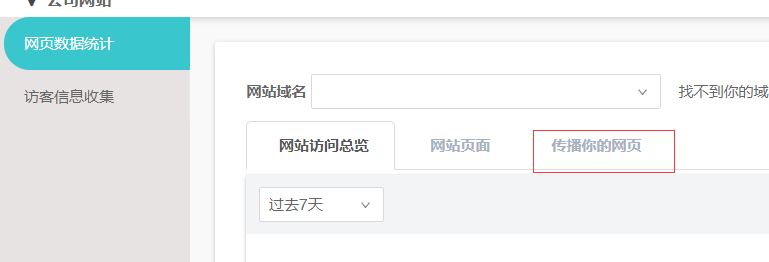
在这里可以设置可追踪来源的url,点击 新建可追踪url 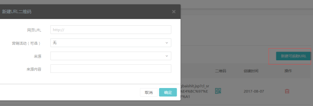
可配置来源与来源内容
将以下该代码封装入js文件中,在每个页面中都要导入该js文件
$(document).ready(function(){
var pageurl = window.location.href;
var urlsource = "";
if(pageurl.indexOf("cl_sr")!=-1){
var arrs = pageurl.split("cl_sr");
var urlsource = arrs[1];
urlsource = '?cl_sr' + urlsource;
}
$('a').each(function(){
var href = $(this).attr('href');
if(urlsource != ""){
var Ahref = href + urlsource;
$(this).attr("href",Ahref);
}
});
});
这样我们就能追踪到用户的来源